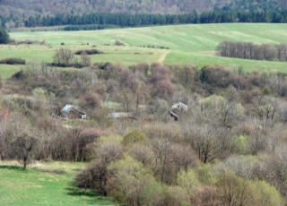

Dziedzictwo
O Nas
KOPYSNO, znane także jako Kopyśno, Kopystno, to miejscowość istniejąca już w XIV wieku i będąca zarazem gniazdem rodu Kopystyńskich. Wiele wieków później, w wyniku dramatycznych wydarzeń II wojny światowej oraz po jej zakończeniu, utraciła największy skarb swej ziemi - licznych mieszkańców.
Czy historię mieszkańców Kopysna można ocalić od zapomnienia? Dopóki choć jeden z nas będzie mógł wymówić słowo "Kopysno" ze zrozumieniem, dopóty miejscowość ta nie ujdzie z pamięci żyjących.
Czytaj więcej o historii

Odkryj
Poznaj Kopysno
Wspomnienia
Galeria

"Dopóki choć jeden z nas będzie mógł wymówić słowo 'Kopysno' ze zrozumieniem, dopóty miejscowość ta nie ujdzie z pamięci żyjących."